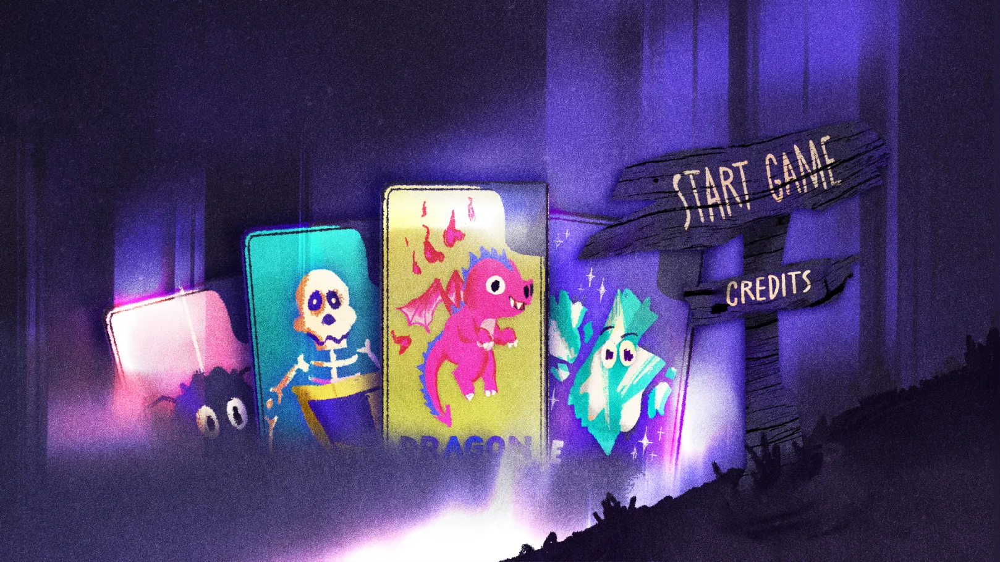
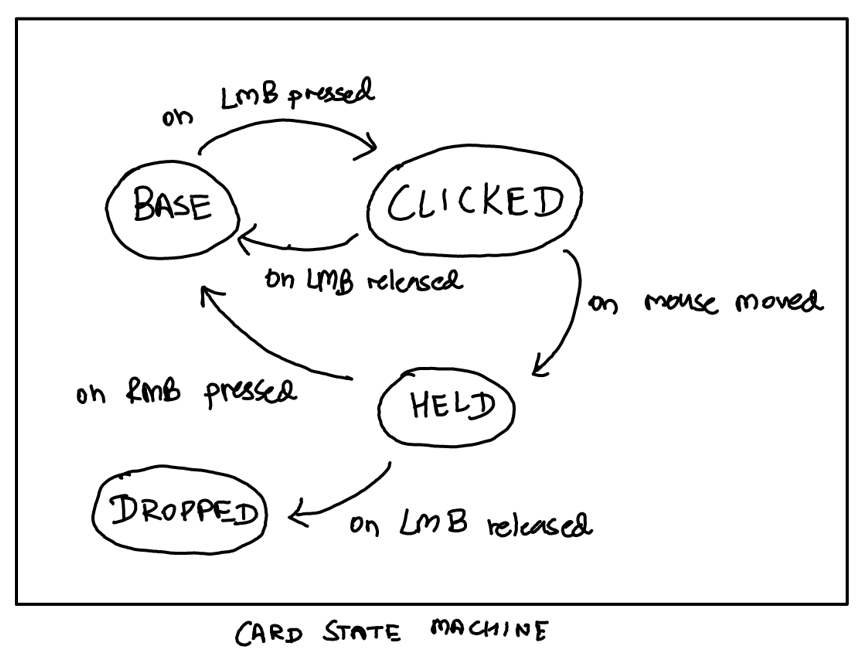
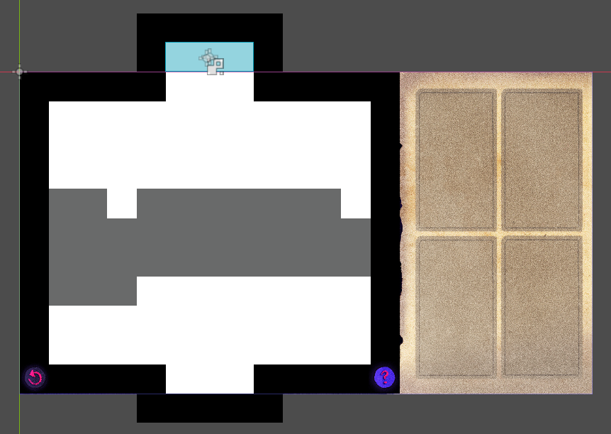
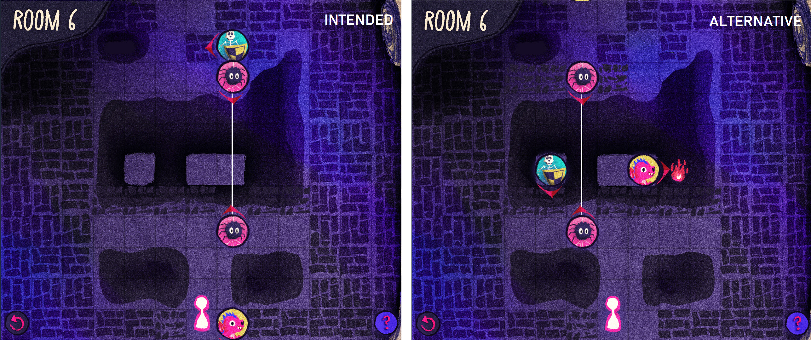
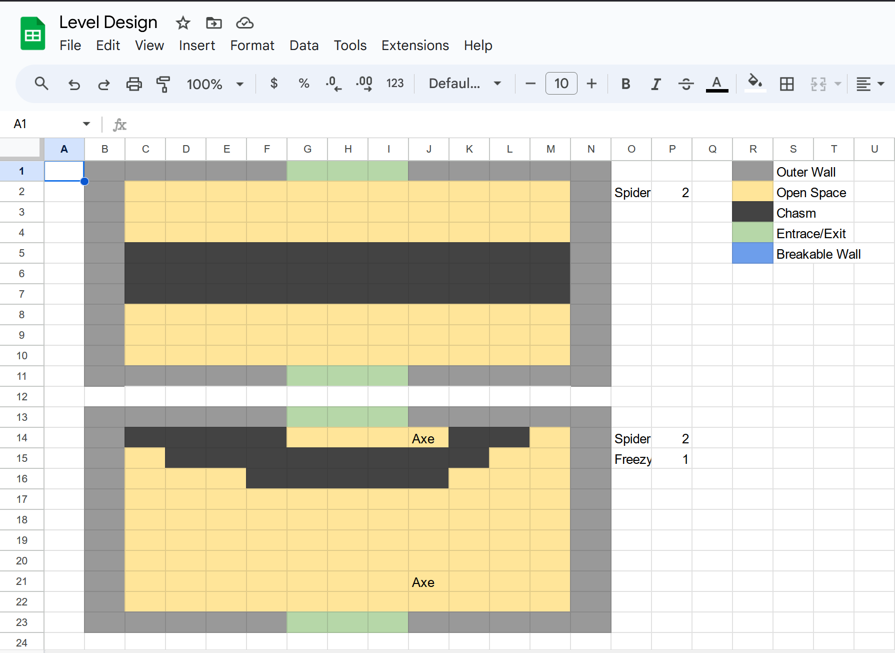
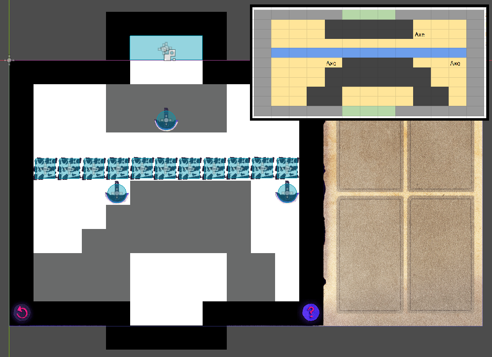
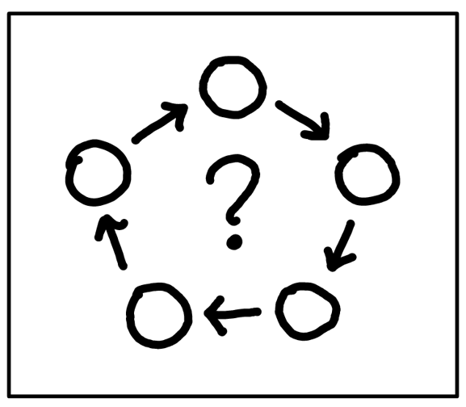
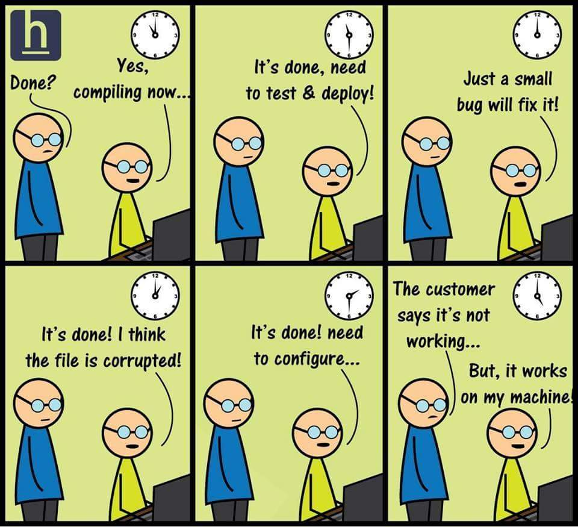

Around two weeks ago, something caught my eye while I was mindlessly scrolling my Twitter feed; someone had just mentioned that the Ludum Dare 55 game jam was happening that weekend. Knowing that it was one of the largest bi-annual game jams ever, I had a sudden burst of motivation to clear out my schedule and make an honest attempt at participating. This would only be my second jam (the first was the GMTK 2023) and I had not touched Godot, my game engine of choice, in quite a few months at that point. The perfect opportunity for an interesting weekend!
Generally, indie developers and jam enthusiasts tend to wear multiple hats and work on projects solo (a surprising number of which actually turn out quite good!). In my limited experience, however, I have found that working with a team on short jams was more fun and less strenuous to get through. In addition, having a partner brings some diversity to ideas and reduces the risk of tunnel vision. Typically, a perfect divison of labour would involve separating the coding, the sound effects and the visuals; the three main aspects of a game (or so I thought). This time I was lucky enough that I hopped on to the Ludum Dare discord server and quickly found two exceptionally talented people, Jaylus an artist, and Eranan a composer. Over the next 72 hours, we faced the usual challenges for a group of strangers collaborating over the internet with wildly different timezones, but we pulled through :) And out came Summon Squad, something I’m quite proud of.

When I went into this jam, I had a rather narrow vision of what developing games was like; but by the end of it, I got a fair bit of insight and I will try to present them over the course of this post. Before proceeding, I would encourage taking a couple of minutes to try out the game for yourself.
The Idea
At 3AM EST, the theme was announced… Summoning. Not bad! I was quite excited since I have a great deal of fun with magic and wizards and all that. The first thought is never the best though, and wizardry was far too obvious an interpretation of the theme (people came up with some excellent unconventional ideas; I found this one particularly hilarious.). Jaylus made it clear at the start that she did not want to make a typical platformer style game, much to my dismay as this is what I had experience with. In hindsight, this was a great decision as it allowed me to learn new things. We then started throwing around ideas, and this was one that stood out:
Idea 2 : You’re exploring an old haunted house because you heard of hidden treasure & have to fight through spirits/creatures summoned by occult explorers to reach the treasure.
I thought it sounded very Pokemon-like and loved the concept, although I wasn’t too keen on the idea of designing AI systems for the enemy creatures. Especially when we started settling on a more card-based strategy game than a real time beat-em-up, this sounded like a nightmare and I pivoted instead to a puzzle game borrowing the same concept. The core idea was to use mythical creatures to solve environmental puzzles (no AIs, phew) in order to clear a level, and the heart of it would be one thing, Synergy (perhaps I had just recently heard about Balatro, a wildly popular indie game, and the word just bounced around in my head). However, in the hurry to settle on an idea (as is necessary in the first few hours of such a short jam), we did not flesh out the concept! Following were the glaring questions that we had brushed under the rug in the hopes of figuring it out eventually;
- What kinds of environmental puzzles do we have in mind? What would the obstacles be?
- What abilities do the creatures have? How exactly would ‘synergies’ work?
- Would the player place these creatures and then start the game (like a Rube Goldberg machine), or would the player have to react in real-time?
All these crucial questions that would decide the gameplay were left in the air since we had to break up due to differing time-zones. It would later on come to bite us, but I suppose thinking on your feet is simply a part of what makes game jams challenging!
The Execution
User Interface
As my team mates were catching up on sleep, I got to work to implement some of the main systems in the game to see what the gameplay would look like. Here is where my first lesson was learnt; during a jam it is important to think like a game developer and not a programmer! However, I was very intrigued by the idea of a UI system to drag and drop cards on the game board and immediately dove into that. To begin with, Godot neatly handles the capture and propagation of input events (keypresses and mouse clicks), but it is upto us to decide how to manage that input. The idea is simple; I have a deck of cards, I would like to pick them up with my mouse and drop them elsewhere. This could be done with a spaghetti of ifelses but where’s the fun in that?
Instead, I ended up learning about a common design pattern in games, namely, State Machines. Hmm… this sounds familiar. State Machines. State Machines… Finite State Machines? It was a concept I have studied before, in the context of the theory of computation. In a nutshell, it is an abstract computational model with a finite number of states and a bunch of rules to transition between them for a given input. Typically, this is used for enemy characters in video games, but really it applies to any object at all that is stateful. And our cards are indeed stateful!

The above image shows the diagram for the state machine I used; the circles are states and the arrows represent the input needed to trigger a transition. I thought it was really neat that this rather abstract concept that I learnt years ago, popped up here and made things very pleasant to implement (it also pops up in another unexpected place, namely, in the construction Matrix Product Operators when dealing with Tensor Network methods to study Quantum systems, but thats for another post). Anyways, followed by a quick dive into using tile maps in Godot, I ended up with this after a couple of hours.
Ah, programmer art. Beautiful isn’t it?
(What’s that bar at the bottom you wonder? It was an early mana system that we ended up scrapping.)Now that we can pick up cards; what about dropping them on the grid? Each level inherently has three characteristic tiles; Wall (cannot walk through them or place summons), Chasm (can walk and fall to your death, only certain summons can be placed), and Ground (walkable and can place all summons). This information is encoded in each level by manually painting the tile map with three corresponding tiles like so.

On initialization of the level, this data is parsed into a 2D array which is the internal representation of the game board that keeps track of the game state and where each object is. With this, the day was nearing an end as my mistake dawned upon me… in my fascination with state machines and tilemaps, I forgot to actually implement gameplay mechanics and figure out what they would look like. Thankfully, Jaylus took charge and we quickly came up with some rough ideas for creatures and their abilities.
Creature ideas, thoughts? @everyone
Flying mini dragon: Can spit fireballs that destroy “weak” blocks
Spider: Can weave webs to cross gaps
Skeleton: Can block/deflect projectiles with a shield
Frost elemental: Can temporarily freeze moving obstacles (e.g., a swinging axe hung from the ceiling)
By the time I had the UI system ready, Jaylus had also made a bunch of the art, and at the end of day one we technically had a playable game where the user could summon creatures for no purpose, because there was absolutely nothing to do yet. Further, the concepts we had were untested and we had no way of knowing if it would actually be engaging.
What a disaster! A beautiful looking one at that, but a disaster nonetheless.
Mechanics
The next day I woke up in a panic, flooding the clean architecture I had written the previous day with absolutely un-maintainable spaghetti code. I don’t feel too bad about this though, since for a one-and-done project like a jam game, playability is a larger priority than maintainability. And it turns out that once you let loose a bit, its not too hard to make progress!
However, the design choices I made on a whim at this point did result in several annoying bugs in the finished result. The biggest blunder was that although the objects lived on a grid, I treated collisions (from fireballs or axes) in the continuum using Collision shapes instead of simply checking the grid data. This seemed simpler at the time, and it was, but it undeniably made the game feel less polished due to buggy physics. I suppose you win some, you lose some ¯\_(ツ)_/¯.
Creating synergy
I started off with the dragon and its fireball which were quite simple to implement, its simply a projectile that behaves differently based on the target it hits. For example, it is destroyed when hitting an axe or a wall, but it kills any summon, player or breakable wall standing in its way. Interaction with the skeleton is different however; it gets destroyed if it hits head on, deflected if it hits sideways and kills the skeleton if its facing the other direction.
See what I’m getting at here? Adding a single element to the game now introduces a whole new host of interactions with every other existing element. That is the synergy that I hoped to implement, although I was not able to get far in accomplishing this. By adding rich interactions between summons, we get closer and closer to a truly wonderful concept of emergent gameplay (something that Rainworld and Noita achieved exceptionally). That is, behavior that we hadn’t explicitly planned out starts arising out of a few basic rules. It simply happens because it can. It is actually quite reminiscent of emergent phenomena in nature, which is equally mystifying. Another example of varied interactions that seed such gameplay involves how the skeleton interacts with an axe based on its direction.
Perhaps these can then be chained in some manner to create a cascading effect. Unfortunately we ran out of time to experiment with something like this during the jam. Regardless, the feedback recieved from players did establish the fact that the game shows much potential with the addition of more summonable creatures and interactions (such as webs burning upon touching a fireball or getting cut when sliced by an axe).
Emergent gameplay in a puzzle game is a bit hard to balance though since you need to anticipate player solutions in order to avoid cheesing a level with the same trick over and over. In other cases, like the one shown below, the flexibility of interactions simply gives rise to more innovative solutions which is a desirable effect. When a game provides the player with a set of tools and there are intuitive ways that the player wishes to use those tools, it stands to reason that the experience will be enhanced if the game is flexible enough to accomodate such behavior. It remains to be seen whether the necessary balance can indeed be struck to make it work in a puzzle game.

Designing levels
While I was implementing the mechanics, we were running out of time and Eranan came in clutch! He had a bunch of level ideas just based off the bits and pieces of demo videos I sent over the day and whipped up a couple of mock levels. This was done in a rather simple manner… using google spreadsheets. And it worked like a charm :)

Below is an example of how this translated into an actual level inside the Godot editor.

Since the game didn’t really come together until the last couple of hours, it was largely unclear as to how it would present a challenge. We knew that it would involve placing creatures to clear obstacles, but there had to be some limiting factor that puts some pressure on the player. We toyed around with a mana system and a cost for playing each summon, or perhaps a timer on each summon that swapped it out with some other card upon timeout. In the end, we simply settled on limiting the number of cards provided per level (a staple choice in puzzle games, and rightfully so as we shall see). This allowed us to gently introduce the mechanics of each summon over the first four levels, followed by giving the player a free reign to explore interactions in the last two levels. As a result, the difficulty ramped up perfectly, leaving us with the only regret that the game ends just as it starts getting fun. Given the circumstances though, getting this far still felt like quite an achievement.
A nasty surprise

Now that the mechanics were done and levels were implemented, I quickly threw together the start/end screens and scene transitions between levels. Just as I thought everything was wrapped up and we actually had a chance of submitting the game on time, I hit another snag when I tried to export the game so that Eranan could playtest. Upon exporting, the executable would launch and immediately close. Okay. Something has gone wrong, let me relaunch the editor and see whats up.
Error Loading: game_start.tscn
Load failed due to missing dependencies:
res://src/scenes/levels/level_1.tscn
??? Things were working fine just a second ago, and now I couldn’t open any scene in my editor, forget exporting it. I started panicking hard, even though I had been maintaining version control through Git. If I didn’t know what was causing this issue, there was nothing stopping it from arising again. In attempt to get to the root of this mystery, I clicked through my other scenes and was greeted by similar errors;
Error Loading: level_1.tscn
Load failed due to missing dependencies:
res://src/scenes/levels/level_2.tscn
…maybe I’d have better luck with the next scene? (naive hope has never hurt anyone >:( )
Error Loading: level_2.tscn
Load failed due to missing dependencies:
res://src/scenes/levels/level_3.tscn
Did you catch whats going on? It took me a solid hour at 2am in the morning till I realized after following this hellish stacktrace. It went all the way till the end screen;
Error Loading: game_end.tscn
Load failed due to missing dependencies:
res://src/scenes/levels/game_start.tscn
Wait a minute.. but game_start.tscn just leads back to a missing dependancy of level_1.tscn. What? It turns out that this confusion was really due to Godot being rather vague with its errors. The issue was that in my lazyness, I did not bother implementing a dedicated script to handle the loading of levels. Instead, I simply kept a reference to the next level in each level scene and loaded it upon level completion. This would’ve been fine if I hadn’t had the bright idea of adding a “return to start menu” button along with a reference to game_start.tscn in game_end.tscn. This inadvertently introduced a Circular dependancy and Godot didn’t know how to handle that (nor how to report it in a helpful manner apparently!). Luckily, .tscn files are stored in plaintext and I was able to manually break the loop. This then allowed the editor to open the scenes again, and I was able to write a dedicated level handler script that resolved the issue without any git reverting.
Another one
The nightmares with exporting didn’t end there though. In game jams, exporting a web build is one of the most important things to do as most people don’t trust downloading unknown executables off the internet. Most game engines support a web build out of the box, and how they do it is frankly a actual black magic in my eyes. It stands to reason then that it is a wonder that it works at all, much less bug-free.

I suppose I jinxed it with this kind of thinking, because the web export was plagued with all kinds of inconsistencies with the debug version. The mouse cursor was gigantic, the graphics were slightly misaligned and most importantly the performance randomly tanked. This resulted in input lag for the player, and worse, the stutters ended up screwing with the physics frames, breaking entire levels. In extreme cases, the browser started using excessive memory and simply crashed in an unpredictable manner. These issues were wide and varied across different devices and browsers and I had no hope of fixing them with only few hours before the submission deadline. In the end, it turned out alright as it didn’t seem too prevalent. However, upon digging into this further, I realized that, at least in part, such behavior was actually expected and well known.
Huh? Well, I used Godot 4.2 for this project, and its relatively new. The thing is, Godot 3.5 had been the gold standard for a really long time, and 4.0 came out last year with a bunch of new features and a sizeable rewrite of the engine internals. This resulted in a feature-rich albeit buggier engine, which is still not recommended for usage in production. Specifically in the context of web exports, the Godot developers decided that they wanted to go forward with future-proof web technology for their exports such as SharedArrayBuffers and other things I do not understand. However, not all browsers have caught up in supporting these features and thus we are stuck in an odd position where Godot games suffer not simply because of engine limitations but also due to slow adoption of newer web specifications. Can we really blame Godot here? One could argue that the only way to hasten the process of adopting new technology is by setting an example to begin with.
Player reception and lessons learnt
With the game built and ready to be shipped, I spent the last few hours just fixing some minor bugs and adding hints in each level. I had ChatGPT help me with these hints. They tell nothing that the player couldn’t have figured out already, and I found that absolutely hilarious.
“One spider’s silk, a lonely tale, add another, watch obstacles pale!”
“Turn up the freeze to halt the slice, icy ally makes danger nice.”
“Dragon’s fire, ruins dire, break the walls, journey higher.”
“Armored bones, axes groan, shield held high, dangers disown.”
“Armed with knowledge, face the fray, weave, freeze, burn, clear the way.”
“Threads spun, dragons breathe, one last reveal, in shadows seethe: skeletons stand, flames they fend, navigate their guard, towards the end.”
Once this was done, it was finally time to just sit back and see how players responded to the game. Usually in such game jams, the voting on games is not done by a singular judge but rather by other participants. Ludum Dare has a neat karma system in place such that the more you vote and comment on other games, the more visible your own game is to newer audiences (and this is very important since there are hundreds of games). This system is not without its flaws, and a major one is that generally people tend to leave unusually encouraging and kind comments (where their name is displayed) while leaving poorer ratings (which are anonymous) which is more reflective of their actual opinions. Rather hilariously, this ends up manifesting in a very cookie-cutter format for most comments, something widely known as a compliment sandwich. Here’s some examples from our comment section;
Great interface! I was able to rock with a touchscreen and a keyboard no problem. Art was very nice! loved the style - though for level design it was sometimes tough to figure out where the pits were. The timing and movement aspects felt like a side-show to the puzzle of figuring out how to solve the room, I almost wished for my guy to just auto-navigate instead of having to press the direction every square and watch him slowely slide around. Though definitely still a great submission! :)
An interesting puzzle with cool summoning mechanics. The graphics are a little off, and in some places it seems raw. Just like the mechanics, who don’t always work as we would like. However, still a good game for jam!
Notice the sandwich? There’s nothing inherently wrong with this. I find myself doing the same while reviewing other games too. However, while many of these comments are well meaning and provide genuine constructive criticism, beyond a point, they parrot the same flaws mashed between insincere flattery, making it hard to derive genuinely useful feedback. There is a solution though. In popular jams like the Ludum Dare, some participants also livestream their gameplay while providing feedback on entries. I had submitted our game to a few such streams and this turned out to be far more valuable in terms of gauging player experience. This is what I learnt.
Game design
I noticed that players initially took a while to get the hang of the mechanics in the first level (the fact that summons are placed, rotated and cannot be picked back up) but after that it was smooth sailing past the four tutorial levels, until they hit the final two levels that require a little thinking. The difficulty ramp emerged perfectly, keeping the player engaged and ended on a high.
The thing is, I did not design these levels, I merely implemented what Eranan had designed. Although it seems obvious in hindsight, it was only now apparent to me that game design is a completely separate thing from programming, although they are intricately tied together. Game design deals with elements that are fun to play, and how best to communicate necessary rules to the player to facilitate them to have fun without being too controlling or entirely care-free. This is something that I did not pay much attention to, instead focusing on how to implement aspects of the game. It still managed to work out just fine (perhaps because the idea happened to be fun at its core and my team-mates pulled us through), but it is certainly a lesson for next time to plan accordingly.
Player psychology
Another thing I noticed was that many players were able to solve certain levels with fewer cards than what was provided. I initially thought these were simply overlooked when Eranan designed the puzzles, but I was surprised to find out it was not. In fact, it was a very deliberate move that worked exactly as he intended. These excess cards were provided in the last two levels which were more intricately designed and it played two roles; (1) they acted as red herrings, leading the player to think that the solution was more complicated than what they expected and (2) when they ended up solving it with fewer cards, they felt smart (and they are!) because they found a more optimal route than what we supposedly planned. And this is brilliant because it ends the game at a high note, with the player feeling good about themselves. If you think about it, isn’t that what puzzle games are all about :) that AHA! moment.
This makes it sound like we anticipated every move though. That was certainly not the case either! There were a couple of instances where players did indeed outsmart us, particularly in a manner that hurt the game. In level 4, the player must use a skeleton to deflect the axe so as to clear a path to walk across the chasm. In level 6, we leave the player stranded in a very constricted area with a set of cards that don’t quite make sense (a dragon, a skeleton and a couple of spiders). The intent was that the player connects the dots that if the skeleton can deflect an axe, maybe it can deflect a fireball too. However, there is also an element of experimentation in that they must change the direction of the skeleton to realize that fireballs can be redirected as well. This was hampered due to two reasons:
- An unfortunate bug. If the skeleton is placed <2 blocks away from a dragon, the fireball is deflected but also kills the skeleton. This was not intended behaviour, but the players who were unfortunate enough to encounter this situation got the wrong idea about the mechanic, thus hindering their ideas for solving the puzzle.
- An oversight. Due to a bad placement of blocks in the level, it was actually solvable with just a dragon in an identical way to level 5 (which makes it even worse, since the strategy is fresh in the player’s mind). This lets them skip the usage of the skeleton entirely.

Those who were able to reach the intended solution without the bugs praised the level for its well engineered AHA! moment. Alas! If only we had polished the game such that everyone was able to experience this feeling :(
Presentation
While the game was overall completed and playable, it was clearly not without its bugs and quirks. Following are two of the most prominent nitpicks, both of which we wholeheartedly agree with.
- The player movement should be simplified. Either by means of holding down a button for continuous movement, or by dragging a path with the mouse. As it stands, the user must tap the arrow keys and wait for the painfully slow character to move across the board.
- The card dropping UI needs polish. Since the cards were rather large relative to the board, people often placed them on the wrong tile by mistake and were forced to restart the level. The simplest fix is to simply highlight the tile over which the mouse is currently at, or replace the translucent card with a translucent summon token on the board to indicate where the placement will be.
- Another possible (and programmatically more interesting) fix could be to allow picking the summons back up. However, given the real time nature of the game with moving projectiles and whatnot, this would invariably break the puzzle design. The true solution would have involved the addition of an “undo” button instead, which literally reverses game state. This is a rather cumbersome task though, unless the code has been architectured in an appropriate manner from the beginning.
Given that it is a jam game though, players are quite likely to be forgiving towards such things by virtue of the fact that they are also game developers with equally janky entries. Even so, the fact that the game looks, sounds and feels good to play did tend to make players look past such issues as well. After all, the end goal is to have fun playing and if that comes from leaning a bit towards the aesthetics over mechanics, there is nothing necessarily wrong with that (for example, I felt that this game is a perfect example here).
Final thoughts
Through the highs and lows of this project, I learnt a lot about game design, programming patterns and the intricacies of working in a team. If for some reason you’d like to view the spaghetti I wrote, it is available here in its full glory. Overall, I am quite happy that I got the chance to work with some talented folk and managed to crank out a finished product.
But the bigger takeaway from this is the realization that when designing a game, I don’t simply write code. I craft experiences. Experiences that hinge on human behavior and perception. And I have barely struck the surface for there is so much more to learn :)
Results (updated on 4th May 2024)
Three weeks after making the game, it was finally time to know where we ranked, based on a somewhat arbitrary and flawed system. In the end, the fact that we were able to submit a playable game within 72 hours is an accomplishment in and of itself. Nevertheless, it is a fitting climax to a fun journey!
| Category | Avg. Score | Ranking |
|---|---|---|
| Fun | 4.00 | 130/1221 |
| Innovation | 3.91 | 142/1220 |
| Theme | 4.26 | 129/1209 |
| Graphics | 4.47 | 92/1074 |
| Audio | 3.79 | 230/779 |
| Humor | 3.04 | 573/1048 |
| Mood | 3.98 | 207/1187 |
| Overall | 4.10 | 102/1221 |
Better than I could’ve expected! Breaching the top 100 in graphics is such a well deserved win for Jaylus! I do think the Audio score is a bit biased due to its volume being a bit too low in the game. I feel quite bad about this since I thought Eranan did an excellent job to match the vibe of the game (the web spinning sound is absolute perfection). In any case, for an attempt that felt like it was falling apart midway, I’m quite proud that we got #102 overall.